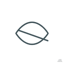

Turn your GitHub repo into a private cloud drive

需要 repo 和 workflow 权限
repo
workflow
松开鼠标Upload文件
No files here yet
Drag files here, or click "Upload" button above
加载中...
Drag files or folders here
Supports multiple files and folders